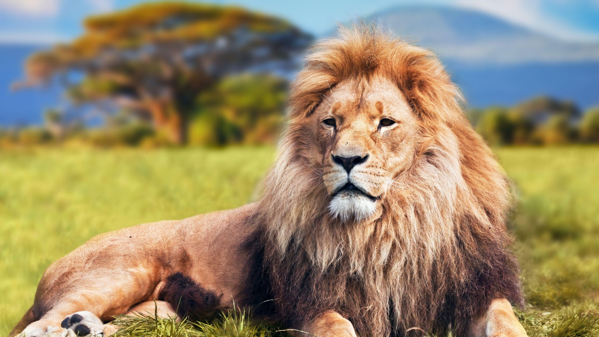

Animals are categorised into ecological groups depending on their trophic levels anher animals may have very specific feeding behaviours, such as hawksbill sea turtles which mainly eat spongeAnimals are categorised into ecological groups depending on their trophic levels and how they consume organic material. Such groupings include carnivores (further divided into subcategories such as piscivores, insectivores, ovivores, etc.), herbivores (subcategorized into folivores, graminivores, frugivores, granivores, nectarivores, algivores, etc.), omnivores, fungivores, scavengers/detritivores,[42] and parasites.[43] Interactions between animals of each biome form complex food webs within that ecosystem. In carnivorous or omnivorous species, predation is a consumer–resource interaction where the predator feeds on another organism, its prey,[44] who often evolves anti-predator adaptations to avoid being fed upon. Selective pressures imposed on one another lead to an evolutionary arms race between predator and prey, resulting in various antagonistic/competitive coevolutions.[45][46] Almost all multicellular predators are animals.[47] Some consumers use multiple methods; for example, in parasitoid wasps, the larvae feed on the hosts' living tissues, killing them in the process,[48] but the adults primarily consume nectar from flowers.[49] Other animals may have very specific feeding behaviours, such as hawksbill sea turtles which mainly eat sponge
